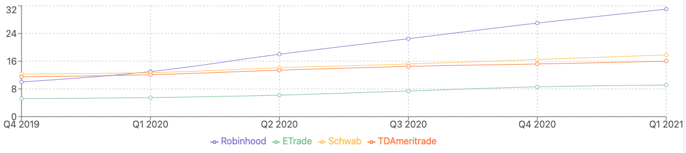
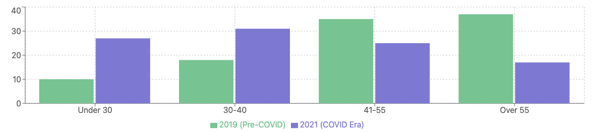
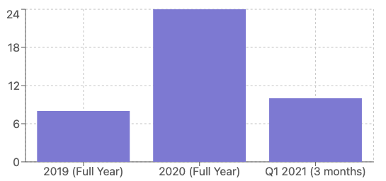
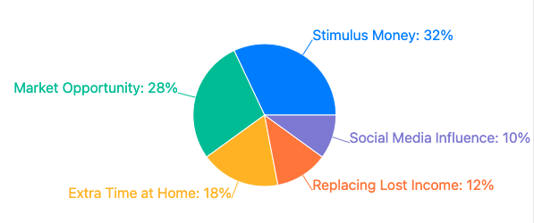

The Electronic Trading Platform / Retail Stock Trading Landscape
ETP / RST platforms are a relatively new phenomenon that gained prominence in the COVID period because it allowed retail investors to focus around an activity and make money in insolation. While electronic trading first started in the 1970s, and developed significantly during the 1990s and 2000s with the spread of the Internet. It was slow in replaceing traditional floor trading and telephone trading in the following 20 years. The use of electronic means to trade saw two waves of rapid growth - in the late 90s and 2000s with the advent and widespread adoption of the Internet and the late 2010s and early 2020s thanks to a very unexpected instigator, the COVID pandemic (Zhu, et al).
Previous trading routines required the engagement of a broker or remisier who are essentially licensed agents trading on behalf of the customers. The rise of ETPs that took over the role and able to execute trades programmatically and in real time helped democratize retails trading. To be sure, most early adopters of electronic trading in the COVID lockdown period are young men who have had their social and work life severely restricted, and had to find an outlet.Those who were out of a job due to the lockdown or restricted working hours had to find alternate sources of income.They would come into contact trading through friends or acquaintances in their social circles, recommending stocks or commodities to invest in.
Because trading through a broker held certain restrictions - buying and selling in a larger lots of 1000 shares, having a higher margin, etc., young men of limited financial means did not find it easy to trade through some of the larger brokerages or established platforms such as Vanguard, E*Trade, TD Ameritrade, to name a few.
Electronic Retail Platforms such as Robinhood allowed this demographics to participate in the trading game and a few to make good gains, which when circulated in social media, engendered more interest and envy in the hitherto fringe user group. In the same timeframe, another form of investing was also silently gaining traction - cryptocurrencies. The main standard-bearer of which, the bitcoin has been the liberator of the masses from fiat currency or a downright scam, depending on which side of the camp the reader is in. What not to be denied is that Crytos such as bitcoin, ethers, or even fiat currency based tokens such as USDT encouraged young investors to take part in the money markets even though they might be relatively unsophisticated players. They come with their own lingo, subculture, investing mindset, and through their numbers and transaction volume progressively became a force to be reckoned with.
The market of electronic retail trading started way back in 1970s, . Although it overtook traditional floor and telephony trading in the intermittent years, the speed was comparatively lackadaisical and sporadic, especially in the US and Europe. It really took root as improbable gang of maverick investors made WallStreetBets into a cultural movement, moving from the fringes of the internet into the spotlight of the investing world, in the span of 2 years. In the course, it upended the global financial markets from the United States to Europe, and Asia, ultimately revolutionizing how a new generation of investors perceive money and investing. WallStreetBets, a subreddit revolving around some risky trading advice, was turned into one of the most disruptive social media in the financial space. The relatively unsophisticated and unpolished forum harnessed the power of memes and trolling to forge a new kind of online identity among new players who wanted their portion of the wealth creation pie. This mixed with the social upheaval and turmoil experienced during the COVID period spoke a generation of young men who were seeking to establish themselves and their financial well-being in society.
Retail Trading Boom during the COVID Pandemic
The COVID pandemic created the perfect landscape for retail trading to grow and boom. The number of users, especially Robinhood skyrocketed when it tripled its user base from “just” 10 million in late 2019 to over 30 million by early 2021.

[User growth of the major platforms in the COVID period]
This growth wasn’t just incremental; it represented a paradigm shift in the share of market participation from veteran investors to young comparatively inexperienced people with less wealth and investing knowledge - a new investing demographic has emerged. What is especially noteworthy is the acceleration that occurred right after the March 2020 market crash. It didn’t scare off the same group of retail investors, instead the market decline counterintuitively attracted them in record numbers, and created a trading volume explosion.

[Growth of trading volume pre-pandemic to post-pandemic]
The chart above shows the daily trading volume quadrupling from about 6 million trades per day pre-pandemic to over 24 million by Q1 2021. This was reflected not just by more people trading, it was also more people trading more frequently.
This trend was underpinned by serveral factors:
- Heightened market volatility during the pandemic creating more perceived opportunities
- Lockdown boredom driving engagement with trading apps as a social and potenially profitable activity
- The gamification of trading platforms and the and addictive lure of frequent trading.
Demographic Revolution
The most profound change in retail trading was the trader demographic itself. Before COVID, retail investing skewed heavily toward older demographics, where over 70% of retail investors being 40 years old and over. By 2021 - right in the middle of the pandemic, this pattern had completely replaced by a new phenomenon, - nearly 60% of active retail traders are under 40.

[Demographics of retail trading pre- and post-pandemic]
This demographic shift has significant implications for:
- Investment styles (greater risk tolerance)
- Asset preferences (more interest in growth stocks, cryptos versus dividend stocks or real estate)
- Time horizons (younger investors theoretically have longer investment timelines)
- Communication and feedback channels (social media instead of brokers and remisiers)
New Account Creation

[Concentration of new account creation growth]
The chart above illustrates the concentration of this account growth was during the pandemic period. In 2020, three times as many new brokerage accounts were opened compared to 2019. Even more remarkably, Q1 2021 alone saw more account openings than all of 2019.
Motivating Factors

[Pie chart of the reaons people get into retail investing]
The leading factor — stimulus payments — reflects how government pandemic relief became unexpectedly redirected into financial markets. With approximately $3,200 in direct payments to most American adults over the course of the pandemic, a significant portion found its way into trading accounts.
The second factor — market opportunity — illustrates how many traders viewed the March 2020 crash as a buying opportunity instead of as a warning sign. The “buy the dip” mentality was reinforced by the quick market recovery that followed.
The third factor—extra time at home—highlights the unique circumstance of lockdowns. Many workers, particularly higher-income knowledge workers who maintained their salaries while working remotely, suddenly had extra hours in their day previously consumed by commuting and office presence.
Long-Term Implications
The data reveals that the pandemic didn’t just accelerate existing trends — it fundamentally altered retail trading pattern in the ways that will likely persist:
- Permanently lower barriers to entry: Zero-commission trading is now industry standard
- Demographic redistribution: Younger investors entered markets decades earlier than historical patterns
- Social investing: Investment communities on platforms like Reddit became powerful market forces
- Changed volatility patterns: Higher retail participation has changed market microstructure and volatility
The growth of retail trading during COVID-19 wasn’t merely a cyclical phenomenon but a structural shift in market participation that continues to reshape financial markets today.
Resources
- Impact of the COVID-19 pandemic on the stock market and investor online word of mouth - Zhu, X., Li, S., Srinivasan, K. and Lash, M.T. (2024). Decision Support Systems, [online] 176, p.114074. doi:https://doi.org/10.1016/j.dss.2023.114074.
2.